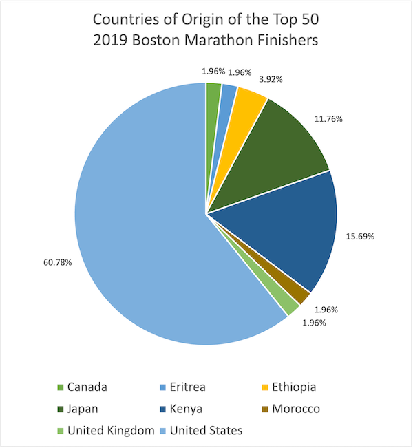

Colors representing the presidential candidates political parties (red for republican party or blue for democratic party)
Color
Good choice because each color represents a distinct political party so it makes it easy to follow
Horizontal bar representing electoral votes
Position
Shape
Good choice because it shows which candidate is winning by having surpassing the electoral votes needed to win and having it be horizontal makes it easy to follow right above the corresponding map
Map of the US
Shape
Area
Good choice because having each state represented as blue or red makes it easy to see which candidate has won more states and also which states vote primarily towards one party or the other
Colormap(s)
Categorical
Red and blue represent distinct political parties
Good choice because red and blue represent the two political parties which the two presidential candidates belong to so the divergent color scale makes it easy to follow
Marks
3 dashes lined which represent fly balls, line drives, ground balls
Points representing the scoring value of botted balls
Channels
There is a color scale for the points which represent the scoring value (purple being below average, white being average, and orange being above average)
Color
Good choice because it made the visual easy to follow since the purple and orange were two distinct colors which represented below average or above average, respectively. Having the midpoint be white also made the scale easy to follow.
The 3 lines are dashed and have small widths
Size
Good choice because the small dashes dont cover too much of the visual but are prominent to see the line
The 3 lines are vertical in direction
Position
Good choice because you you can see where the points lie relative to the 3 distinct launch angles at 50 degrees fly balls, 25 degrees line drives, 10 degrees ground balls
The points are circular
Shape
Good choice because points should be conventionally circular
Colormap(s)
Divergent
Ordered ordinal attribute
Good choice because it represents a scale from below average to average to above average where average is the “mid point” and is white in color

Marks
Area: Pie chart represented as a circle with wedges corresponding to the percentage
Channels
Color:
Each country corresponds to a wedge color
Good choice because ...
Shape:
Circle representing 100 % and each wedge in the circle representing a percentage which all add up to 100%
Good choice because ...
Size:
Each wedge size corresponds to its percentage out of 100%